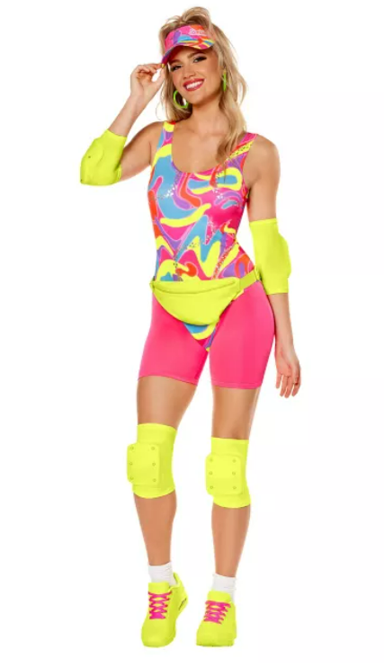
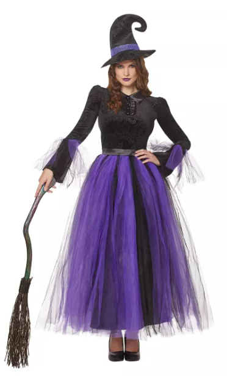
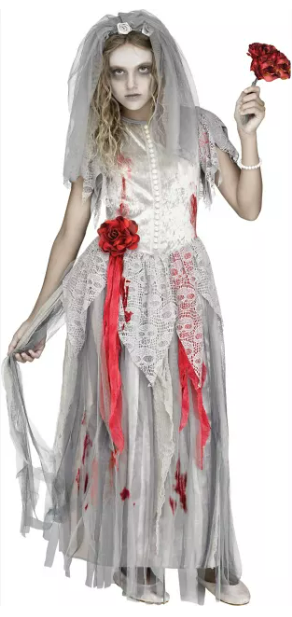
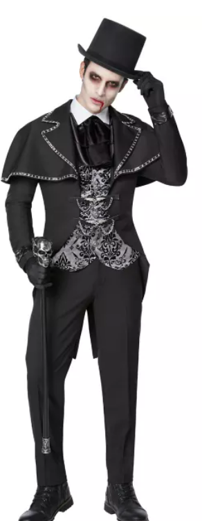
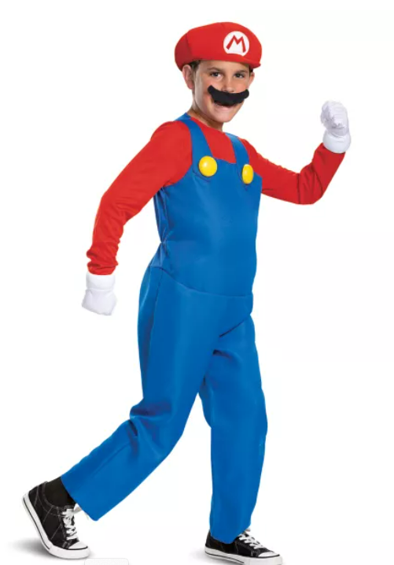
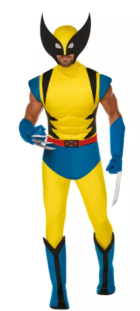
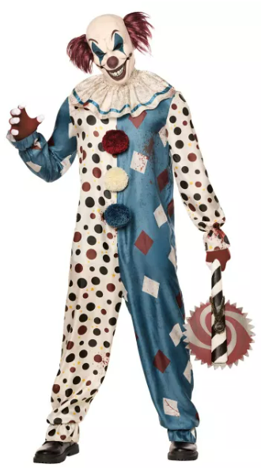
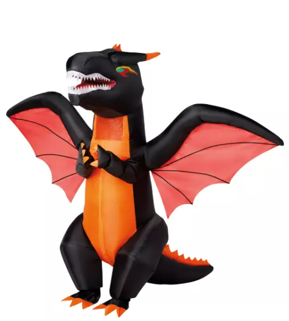
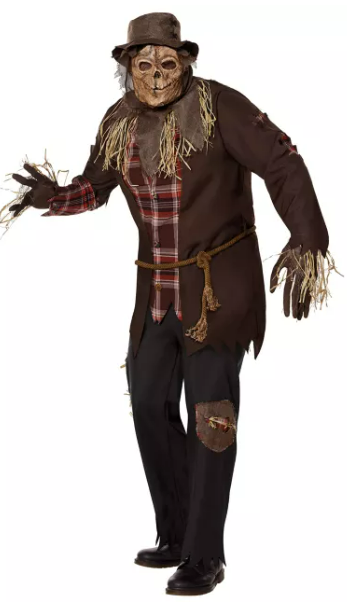
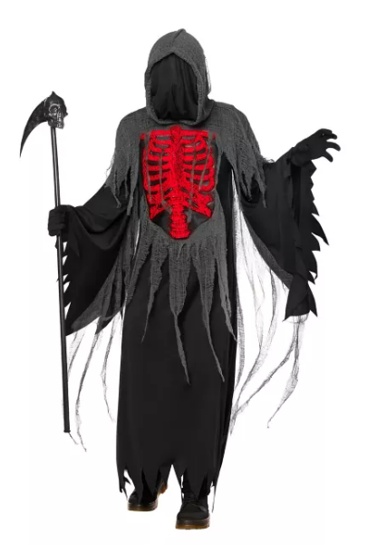

#1
Retro Doll
All-pink everything, a stiff wave, and a plastic-perfect smile. Endlessly easy to do as a group.

#2
Classic Witch
A pointed hat, a flowing cloak, and a broomstick prop go a long way — always a top pick.

#3
Zombie Bride / Groom
A thrifted formal outfit, torn lace, and grey-toned makeup make for a dramatic entrance.

#4
Vintage Vampire
A cape, slicked-back hair, and a pair of plastic fangs — timeless and easy to elevate.

#5
Video Game Hero
Bold colors and a signature prop weapon make this instantly recognizable at any party.

#6
Superhero Team-Up
A great group costume — everyone picks their own power, colors coordinate, capes optional.

#7
Spooky Clown
Exaggerated makeup, mismatched patterns, and a wide grin — unsettling in the best way.

#8
Dragon
Scaled fabric, wings, and face paint turn this mythical creature costume into a showstopper.

#9
Scarecrow
Plaid, straw, and a floppy hat — a cozy, budget-friendly classic that never goes out of style.

#10
Grim Reaper
A hooded black robe and a scythe prop make an instantly iconic, low-effort silhouette.